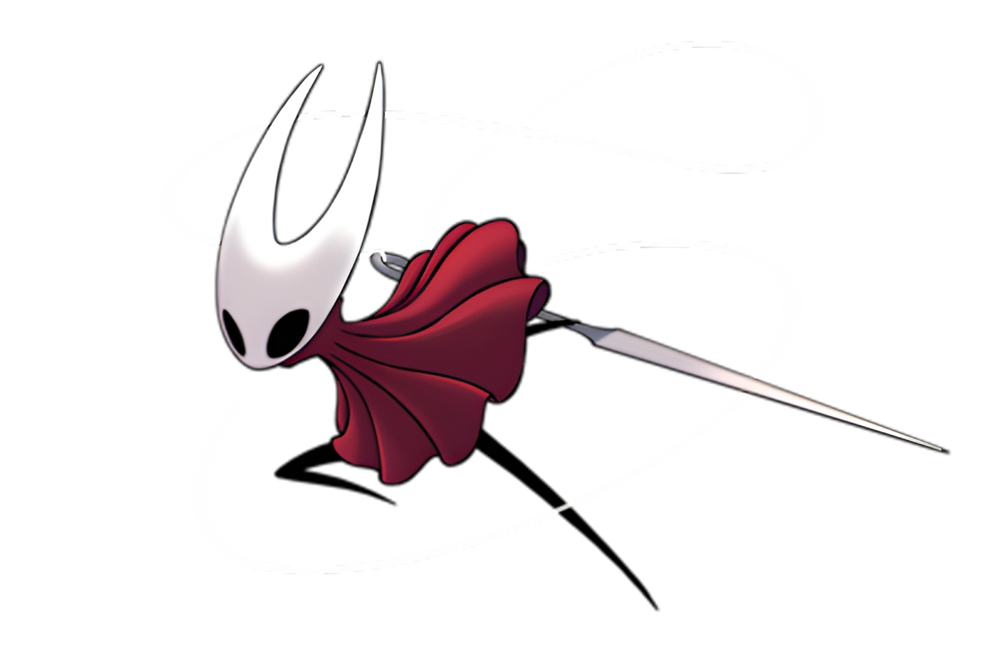
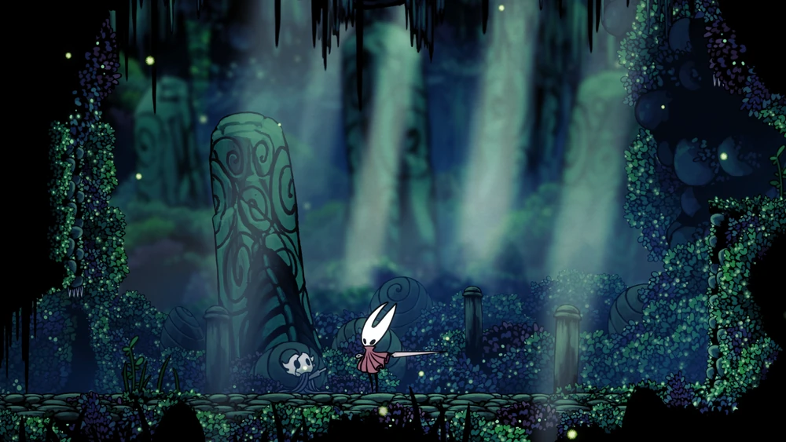

HORNET
Princesa de Hallownest

"Eu vi essa criaturinha ágil. Pensei que fosse sua presa e a ataquei, mas num instante ela me picou com seu ferrão voador e fugiu. Será que ela é... uma Caçadora?"

História

Hornet é filha do Rei Pálido e de Herrah, a Besta , a rainha de Deepnest . Seu nascimento foi o
resultado de um acordo para que sua mãe se tornasse uma Sonhadora e, como tal, ela passou pouco
tempo com Herrah. O fato de ela compartilhar o mesmo pai com o Cavaleiro e os demais
Receptáculos faz com que sejam irmãos.
Hornet lutando contra Quirrell
Criada em Deepnest, Hornet sobreviveu à Infecção e à queda do reino. Ela vagueia por suas
ruínas, afugentando viajantes que buscam profaná-las, mas também protegendo o selamento do Ovo Negro
. Ela também guarda a Casca Descartada na Orla do Reino , que pode conceder a Marca do Rei , a chave
para o Abismo . Em suas funções, ela encontrou Quirrel nos Penhascos Uivantes em sua chegada a
Hallownest. Ela tentou lutar com ele, mas foi repelida pela máscara de Monomon que ele usa na
cabeça. Hornet o deixa em paz após reconhecer a máscara, sabendo que ele foi chamado, apesar de ele
não saber disso.
Assim como Quirrell e o Cavaleiro, ela pressentiu o despertar da Infecção e começou a vagar por
Hallownest em busca de respostas. Em Hollow Knight , ela luta para impedir a destruição iminente que
paira sobre Hallownest.
Eventos
Hornet surge inicialmente como uma antagonista errante e recorrente para o Cavaleiro. Conforme a
jornada deles progride, o envolvimento dela influencia a missão em Hallownest.
O Protetor
Primeira aparição de Hornet
Hornet é encontrada pela primeira vez na entrada de Greenpath , onde observa o Cavaleiro antes
de se afastar. Ela é vista rapidamente mais duas vezes fugindo deles pela trilha tomada pela
vegetação do Peregrino. O Cavaleiro finalmente a alcança nas pedras que marcam a entrada do Lago
de Unn , ao lado do corpo de outro Receptáculo . Ao relacionar a missão do Cavaleiro ao
despertar da Infecção, ela se recusa a prosseguir com a busca. Eles se enfrentam e, ao ser
derrotada, Hornet foge sem dizer uma palavra.
Hornet reaparece brevemente antes do fim da Jornada do Peregrino nos Ermos Fungais , indo em
direção à Cidade das Lágrimas . Mais tarde, ela alcança o Cavaleiro na Praça da Fonte, no meio
da capital encharcada. Finalmente compreendendo a verdade sobre sua origem e sua missão, ela o
encoraja a aprender sobre o sacrifício de Hallownest. Então, antes de partir para encontrá-la na
Concha Descartada, ela pergunta se, sabendo a verdade, o Cavaleiro ainda deseja participar da
perpetuação de Hallownest. Este encontro não ocorre se o Cavaleiro tiver derrotado um Sonhador
ou visitado alguma das salas próximas às áreas de batalha contra os chefes Markoth e Sentinela
Hornet.
O Sentinela
Hornet em Kingdom's Edge
Em Kingdom's Edge, Hornet deseja testar a determinação do Cavaleiro em mais uma batalha antes de
confiar-lhe o futuro de Hallownest. Após sua derrota no auge de suas forças, ela permite que o
Cavaleiro tenha a Marca do Rei gravada em sua carapaça. Ela acredita que ele ainda continuaria
sua jornada mesmo após descobrir a verdade sobre sua concepção no fundo do Abismo. Sua confiança
a leva a salvar o Cavaleiro preso no colapso da Carapaça Descartada, aprisionado sob pilhas de
cinzas brancas. Ela parte novamente sem dizer uma palavra após salvá-lo.
Vespa ao lado da cama de Herrah
Se o Cavaleiro derrotou Hornet em Kingdom's Edge antes de enfrentar Herrah, a Besta, em
Deepnest, Hornet aparece ao lado dele quando ele recupera a consciência. Diferentemente de suas
outras aparições, ela se permite um momento de descanso para lamentar a morte de sua mãe. Ela
também expressa arrependimento por, para pagar sua dívida com a mãe e perpetuar Hallownest, ter
deixado o Cavaleiro pôr fim à sua existência.
Se o Cavaleiro não encontrou Hornet em Deepnest, ela também aparece no topo do Abismo depois que
ele obtém com sucesso o Manto Sombrio e retorna em segurança. Ela agora acredita que, como o
Cavaleiro ascendeu ao Abismo ileso, ele tem uma escolha em sua jornada: prolongar a estase de
Hallownest ou enfrentar o coração da Infecção .
O irmão/irmã
Hornet imobilizando o Cavaleiro Oco
Após o Cavaleiro adquirir o Coração do Vazio e enfrentar os três Sonhadores, Hornet os aguarda
no Templo do Ovo Negro , na Encruzilhada Esquecida. Ela fica impressionada com a façanha deles
de romper os selos e aceitar o Vazio dentro de si, considerando-os seres excepcionais. Assim que
o Ovo Negro é aberto, ela diz ao Cavaleiro que não pode segui-los, pois o ovo, construído para
sustentar Receptáculos, a drenaria caso ela entrasse. Contudo, ela promete ajudar no que for
possível, se a oportunidade surgir.
Ela cumpre sua promessa quando o Cavaleiro Oco está quase derrotado. Ela abre sua casca com sua
agulha, permitindo que o Cavaleiro use o Prego dos Sonhos em seu irmão e alcance o núcleo da
Infecção.
Imagens
